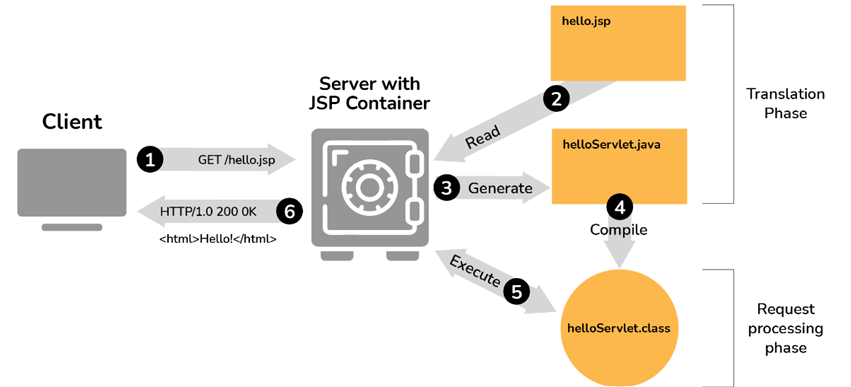
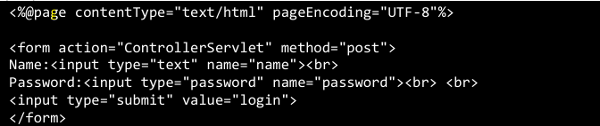
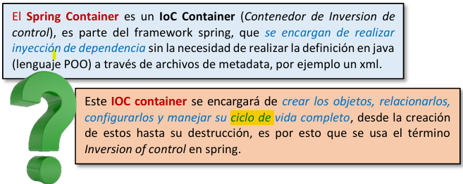
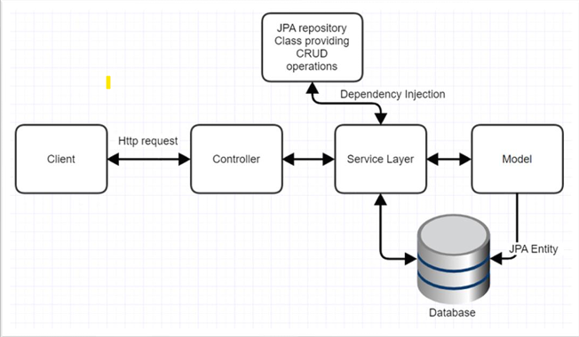
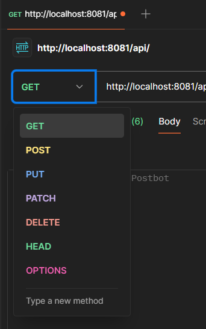

Semana 10: Spring Framework & JSP
Desarrollo backend con Spring Framework, JSP y gestión de dependencias con Maven.
Apache Tomcat & Maven
Apache Tomcat:
- Contenedor de servlets/JSP (implementa Servlet 4.0 y JSP 2.3)
- Estructura de directorios:
- bin/: Ejecutables y scripts
- conf/: Configuración (server.xml)
- webapps/: Aplicaciones desplegadas
- logs/: Archivos de registro
Estructura de directorios de Apache Tomcat
Maven:
- Gestión de dependencias, compilación y empaquetado
- Archivo pom.xml define el proyecto
- Ciclo de vida: compile → test → package → install → deploy
- Comandos principales:
mvn clean install tomcat7:deploy // Desplegar
mvn clean install tomcat7:redeploy // Redesplegar
mvn clean install tomcat7:undeploy // Eliminar
Ciclo de vida de Maven
Jakarta Server Pages (JSP)
Conceptos básicos:
- Tecnología para crear páginas web dinámicas
- Se traduce a servlets Java en el servidor
- Sintaxis:
<% // Scriptlet Java %>
<%= // Expresión %>
<%! // Declaración %>
Ejemplo básico:
<%@ page contentType="text/html;charset=UTF-8" %>
<html>
<body>
<h1>Hola desde JSP!</h1>
<p>Fecha: <%= new java.util.Date() %></p>
</body>
</html>

<html>
<body>
<h1>Hola desde JSP!</h1>
<p>Fecha: <%= new java.util.Date() %></p>
</body>
</html>
Flujo de procesamiento de una página JSP
Objetos implícitos:
- request: Objeto HttpServletRequest
- response: Objeto HttpServletResponse
- session: Objeto HttpSession
- application: Objeto ServletContext
- out: PrintWriter para enviar salida
Ejemplo con MVC:

Arquitectura MVC implementada con JSP
Spring Framework
Conceptos clave:
- Beans: Componentes gestionados por Spring
- IoC (Inversión de Control): Spring gestiona el ciclo de vida de los objetos
- DI (Inyección de Dependencias): Spring provee las dependencias necesarias
Inversión de Control en Spring
Tipos de DI:
- Constructor-based: Para dependencias obligatorias
- Setter-based: Para dependencias opcionales
- Field-based: No recomendado (usa reflexión)
// Ejemplo Constructor-based
@Autowired
public MyClass(Dependency dep) {
this.dep = dep;
}
@Autowired
public MyClass(Dependency dep) {
this.dep = dep;
}
Configuración XML:
<beans>
<bean id="estudiante" class="com.universidad.Estudiante">
<property name="nombre" value="Juan"/>
</bean>
</beans>

<bean id="estudiante" class="com.universidad.Estudiante">
<property name="nombre" value="Juan"/>
</bean>
</beans>
Spring Container
Spring Boot
Características:
- Configuración automática
- Servidor embebido (Tomcat, Jetty)
- Métricas y health checks
- Simplifica el desarrollo con Spring
Spring Boot en https://start.spring.io/
Arquitectura típica:

Arquitectura de una aplicación Spring
Ejercicios Prácticos
1. API con validación:
@GetMapping("/student/{id}/{nota}")
public ResponseEntity<Map<String, Object>> validarNota(
@PathVariable String id,
@PathVariable String nota) {
// Validar que son números
// Retornar JSON con estado 202
}
public ResponseEntity<Map<String, Object>> validarNota(
@PathVariable String id,
@PathVariable String nota) {
// Validar que son números
// Retornar JSON con estado 202
}
2. API con promedio:
@GetMapping("/student/{id}")
public ResponseEntity<Map<String, Object>> calcularPromedio(
@PathVariable String id,
@RequestParam double nota1,
@RequestParam double nota2,
@RequestParam double nota3) {
// Calcular promedio
// Retornar JSON con resultado
}
public ResponseEntity<Map<String, Object>> calcularPromedio(
@PathVariable String id,
@RequestParam double nota1,
@RequestParam double nota2,
@RequestParam double nota3) {
// Calcular promedio
// Retornar JSON con resultado
}
3. API REST CRUD:

Vista en Postman